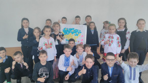
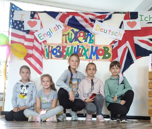
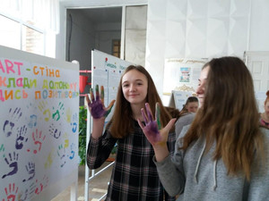
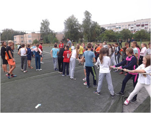
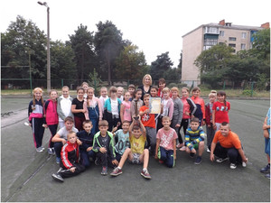

Зображення
    
Виховання – багатогранний і складний процес, значення якого неможливо переоцінити. Він передбачає формування у дитини єдиної системи цінностей і соціальних компетенцій.
А це і ставлення до себе і своїх батьків, відношення до природи, суспільства, своєї країни тощо. Метою виховної роботи школи є виховання громадянина України – носія цінностей та загальнолюдських надбань.
Виховна система НВК №3 передбачає реалізацію наступних завдань:
- Виховання відповідального ставлення до навчання та до праці, розширення політехнічного кругозору й підготовка до свідомого вибору професії.
- Формування в учнів естетичної культури, розвиток умінь створювати прекрасне навколо себе, розвиток художніх здібностей і талантів дітей.
- Екскурсії на підприємства міста, до місцевого краєзнавчого музею, містами України.
- Бібліотечні дні, літературні конференції, інтелектуальні конкурси.
- Бесіди, лекції, робота НВК №3 «Ввічливих малят»; корекційно-виховні заходи.
- Співпраця із громадськими організаціями; правові лекторії і вікторини.
- Спортивні змагання, спартакіади з футболу та баскетболу, походи в довкілля, дні здоров’я, шкільні туристичні змагання.
- по створенню сприятливих умов для інтелектуального, духовного, морального, фізичного розвитку вихованців;
Для реалізації цих завдань у школі розроблений план виховної роботи навчального закладу та окремі плани класних керівників, які були затверджені на засіданні методичного об’єднання класних керівників. Ці плани охоплюють всі напрямки виховання: патріотичне, правове, моральне, художньо-естетичне, трудове, фізичне, екологічне, превентивне та включають у себе календарні, традиційні шкільні свята, заходи, конкурси, міські заходи щодо втілення національної програми «Діти України», «Комплексної програми профілактики злочинності і бездоглядності», «Програми профілактики ВІЛ-інфекції», «Національної програми виховання учнів 1-11 класів», заходи щодо зміцнення моральності та утвердження здорового способу життя та ін.
Виховна система ліцею заснована на інтеграції урочної та позаурочної діяльності, взаємодії ліцею з громадськими організаціями, єдиного соціального замовлення сім'ї, вихованців, суспільства.
Для досягнення поставленої мети в галузі виховання педагогічним колективом ліцею вирішуються завдання: